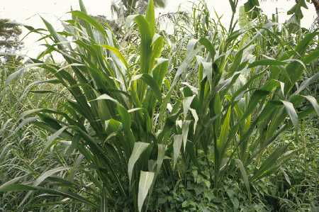

Guatemala grass, Guatemalan gamagrass [English]; pasto guatemala, pasto prodigio, zacate guatemala [Spanish]; herbe du Honduras, herbe du Guatemala [French]; rumput jagung, rumput jelai [Malay]; หญ้ากัวเตมาลา [Thai]
Tripsacum andersonii J. R. Gray ; Tripsacum laxum Nash [Poaceae]
Guatemala grass has long been referred to as Tripsacum laxum Nash in the literature, but it is now considered that plants once described under that name belong to Tripsacum andersonii J. R. Gray. As of 2013, GRIN recognizes Tripsacum andersonii J. R. Gray as the main Guatemala grass species, with Tripsacum laxum Nash as a distinct species. However, the situation remains confusing. Notably, the USDA only recognizes Tripsacum fasciculatum Trin. ex Asch. and considers Tripsacum laxum Nash to be a synonym (USDA, 2012; Cook et al., 2005). This datasheet uses the name Tripsacum andersonii but it should be understood that the literature, which mostly refers to Tripsacum laxum, may actually describe either Tripsacum andersonii or different, but closely related, species, including Tripsacum laxum.
Guatemala grass (Tripsacum andersonii J. R. Gray or Tripsacum laxum Nash) is a robust, strongly rhizomatous, tufted and leafy perennial grass that can form large bunches. The stems can be up to 3.5-4.5 m high and up to 1-5 cm in diameter. They develop at a very late stage and Guatemala grass remains leafy for a long time. The roots are shallow and the plant does not grow well during a long dry season. As the grass matures, the roots become stronger and store nutrients that will be necessary for regrowth after cutting (Bernal, 1991). The leaves are tall (0.4-1.2 m long x 9 cm broad), glabrous or sparsely hairy (Quattrocchi, 2006; Clayton et al., 2006; Cook et al., 2005; Bogdan, 1977). The inflorescences are subdigitate with 3 to 8 slender, elongated racemes, up to 20 cm long, containing male and female spikelets (3-5 mm long). Flowers are mostly sterile and Guatemala grass is usually propagated by stem cuttings or tuft division (Bogdan, 1977).
Guatemala grass is cultivated primarily for fodder in cut-and-carry systems. It can also be used to make silage. Guatemala grass provides several environmental benefits, notably against soil erosion and the development of pests and diseases in neighbouring crops (Cook et al., 2005).
Guatemala grass originated from Mexico and South America and has been introduced for fodder in many tropical countries. It is a warm season grass that grows from sea level up to an altitude of 1800 m, at temperatures ranging from 18 to 30°C. It does better under good soil moisture but can withstand short droughts. It is intolerant to waterlogging and flooding. It can grow on a wide range of soils (including podsols, ultisols, oxisols, peats, acid sulfate soils and very acid coastal marine sands) and withstands low pH and the presence of Al, provided the soils are well-drained (FAO, 2012; Cook et al., 2005).
Guatemala grass is usually propagated from stem cuttings or rooted culms at the beginning of the rainy season. The first cut can be done 4 to 6 months after planting. Guatemala grass can be planted with fast growing twinning or shrub legumes such as Desmodium intortum, Desmodium uncinatum, Calliandra calothyrsus, Leucaena leucocephala, Leucaena diversifolia and Sesbania sesban (Cook et al., 2005; Akyeampong et al., 1996). The association of Guatemala grass with Leucaena diversifolia or Calliandra calothyrsus produces as much DM as Guatemala grass alone and improves the production of digestible protein (Akyeampong et al., 1996). The average DM yield is about 18-22 t/ha/year (Cook et al., 2005). In the eastern highlands of Africa, yields ranging from 9 to 50 t DM were recorded (Nivyobizi et al., 2010; Mtengeti et al., 2001). Since most of the biomass is produced during the wet season, it is generally recommended to use Guatemala grass in cut-and-carry systems (Wandera, 1997). It can also be stored as silage for dry season supply (Sarwatt et al., 1992).
Smallholder dairy producers in the highland areas of East Africa (Kenya and Tanzania) have been encouraged since the 1970s to grow Guatemala grass as a high-yielding fodder (Myoya et al., 1988; Boonman, 1993). However, such initiatives have met with a mixed reception: in Kenya, when compared to other forage species evaluated for herbage dry matter yields and farmer acceptance, Guatemala grass was ranked lowest, mainly because of foliar diseases and poor regeneration after defoliation (Muyekho et al., 2003).
Fences and soil erosion control
Guatemala grass is used for hedges or for contour stripping of cassava crops planted on steep slopes. Guatemala grass is a good soil binder and organic matter builder (FAO, 2012). In the highlands of East and Central Africa, it is used to combat soil erosion and increase the stability of contour bunds (Akyeampong et al., 1996). Guatemala grass is more effective at controlling soil erosion when combined with companion trees such as Sesbania, Grevillea or Desmodium (FAO, 2012; Bationo et al., 2011).
Soil improvement
Guatemala grass can be used as mulch to improve soil (Cook et al., 2005; Rao, 2000). In tea plantations, Guatemala grass mulch increased 3-year-old tea yields by 10% (Sandaman et al., 1976).
Other environmental services
Guatemala grass helps to control weeds, which, in turn, results in a reduction in nematode infestation. For instance, it is used in tea plantations for rejuvenating soils during fallow and preventing Meloidogyne nematode infestations (Naturland, 2000). In Burundi, Guatemala grass has been used to reduce bacterial wilt in potato plantations (Cook et al., 2005).
Human health concern
Though contour stripping with Guatemala grass has many advantages, it is reported to harbour more rodents than other grasses, causing a potential health hazard (plague) (Kamugisha et al., 2007; Mati, 2006).